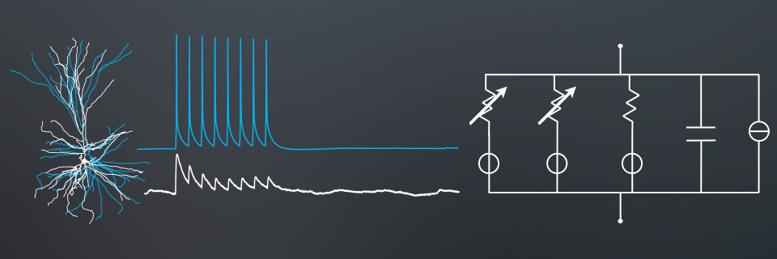
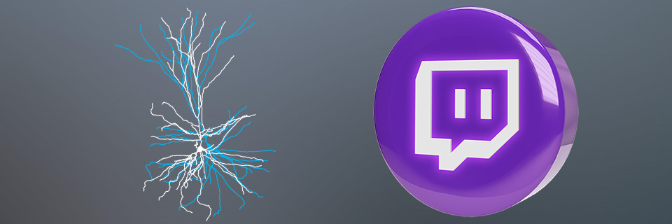

Aims

Over the past decades, hard sciences such as Chemistry and Biology witnessed the emergence of
counterpart "computational" disciplines, like Computational Chemistry and Computational Biology.
These are all branches of Computational Science (known also as Scientific Computing), a discipline
that uses math and computers to answer scientific questions. As in daily weather forecasts or
global-warming computer simulations, scientists use equations and computer to solve and analyse
them, so that they can make predictions of real experiments.
Computational Neurosciences is a multidisciplinary field that studies brain functions and
dysfunctions and how information is processed by cells and circuits, by ultimately building
mathematical models and numerically simulating them on computers, aiming at tackling scientific
questions that are relevant for the understanding of the brain. These models are often, but not
always, intimately grounded in first-principle biology, biochemistry, physics, and electromagnetism,
so that the processes within individual nerve cells, synapses, and networks are described like a
real pendulum can be studied by pen and paper, by a simple formula and a series of parameters.
This is not a course in computer programming, but it features hands-on exercises and training,
allowing students to build and get familiar with models and computer simulations. This is also not
a course in math and physics, but it builds on high-school or bachelor-level elementary concepts
(i.e. calculus, algebra, electricity, etc.).
Students will be presented with a selection of elementary topics in Computational Neuroscience,
understanding the motivations behind a mechanistic dissection on how the mammalian nervous system
works. They will increase their knowledge in quantitative approaches in Neurosciences and will
increasingly be able to apply their knowledge to grasp modelling components of cutting-edge
scientific publications.
Students will increasingly start making quantitative judgement of cell electrophysiology and
biophysics, analysing how significant discoveries could be made in these domains and where the
availability of solid theoretical and computational tools revealed to be extremely fruitful.
Students will become fluent in this language and skills.
Students will be presented by a quantitative style of analysis of neural systems, as an opportunity
to expand their learning skills towards "synthesis", "quantitative analysis", and "in silico investigation" in Neurobiology.
Registration
Register using the Google FORM
.
You will need:
A raccomandation letter written by a senior resercher
Your CV, including a short summmary of it (max 500 words)
A motivational letter where you explain why you are intersted to take part at the ANEIS School and why you should be chosen (max one A4 page text 10 pt)
Discord & Code of Conduct

We built a Discord server as an (online, real-time) virtual meeting place and as an (offline,
asynchronous) forum for questions and answers, for discussions on topics of the course, as well as for the students to offer mutual assistance during their study process. Access is reserved only to students attending the course.
If you do qualify as a legitimate member of our community, simply click on the icon above. Watch
out!! After clicking, you will get an error. Then, please edit the URL address you navigate to upon the first click, and add at its very end an extra "five" as a number. This precaution should make life slightly difficult for automated spam BOTs and scammers.
Before joining, please do take a serious look at our Code of Conduct, below:
Code of Conduct of our Class/Discord Server
We are committed to creating a collaborative, open, and inclusive teaching and learning environment.
All students, teaching assistants, affiliated faculty, organizers and contributors are expected to
adhere to this Code of Conduct.
Participants or affiliates who are asked to stop any inappropriate behaviour are expected to comply
immediately. This applies to any events and platforms, either online or in-person. If a participant
engages in behaviour that violates this Code of Conduct, the organisers may warn the offender, ask
them to leave the event or platform, or engage UniTs/SISSA’s Ombuds Offices to investigate the
Code of Conduct violation and impose appropriate sanctions.
Violations of the Code of Conduct should be reported to MG.
1. Be inclusive
We welcome and support people of all backgrounds and identities. This includes, but is not limited to
members of any sexual orientation, gender identity and expression, race, ethnicity, culture,
national origin, social and economic class, educational level, color, immigration status, sex, age,
size, family status, political belief, religion, and mental and physical ability.
2. Be considerate
We all depend on each other to produce the best work we can as an organization. Your decisions will
affect students, teaching assistants, and colleagues around the world, and you should take those
consequences into account when making decisions.
3. Be respectful
We won’t all agree all the time, but disagreement is no excuse for disrespectful behavior. We
will all experience frustration from time to time, but we cannot allow that frustration become
personal attacks. An environment where people feel uncomfortable or threatened is not a productive
or creative one.
4. Choose your words carefully
Always conduct yourself professionally. Be kind to others. Do not insult or put down others.
Harassment and exclusionary behavior aren’t acceptable. This includes, but is not limited to:
- Threats of violence
- Insubordination
- Discriminatory jokes and language
- Sharing sexually explicit or violent material via electronic devices or other means
- Personal insults, especially those using racist or sexist terms
- Unwelcome sexual attention
- Advocating for, or encouraging, any of the above behavior.
5. Don’t harass
In general, if someone asks you to stop something, then stop. When we disagree, try to understand
why. Differences of opinion and disagreements are mostly unavoidable. What is important is that we
resolve disagreements and differing views constructively.
6. Make differences into strengths
We can find strength in diversity. Different people have different perspectives on issues, and that
can be valuable for solving problems or generating new ideas. Being unable to understand why someone
holds a viewpoint doesn’t mean that they’re wrong. Don’t forget that we all make
mistakes, and blaming each other doesn’t get us anywhere. Instead, focus on resolving issues
and learning from mistakes.
7. Act honestly and with academic integrity
We expect you to respect basic academic integrity principles and take academic integrity to mean
adherence to the following values:
- Honesty
- Trust
- Fairness
- Respect
- Responsibility
- Courage.
More information on academic integrity and these values can be found at the International Center of Academic Integrity.
Be honest in your applications and in your potential reasons for missing classes, or project assignments.
Take responsibility for your mistakes and work to remedy them. Don’t take the course under
someone else’s name or identity.